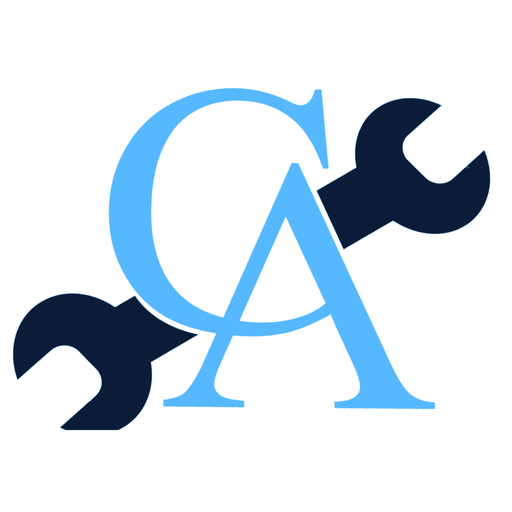

Coming from Lemoyne? Cain Automotive is just up the road - Cain Automotive of Enola PA. All major and minor automotive repair, plus PA state safety inspection and emissions, at 301 South Enola Drive. Call (717) 732-5888.
Get a free estimate See our work